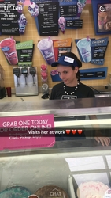
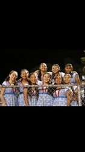
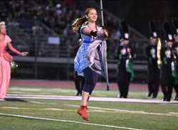
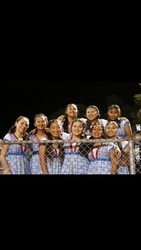
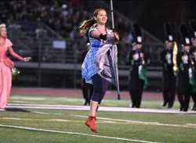

Portfolio





 
As a second-year Global Studies Major, my main focus is to better my understanding of the world around me, and the interactions subdivisions of the world have with one another. The goal in the end to help not only those around me but on a global scale taken from the knowledge gained from my time studying in college. For accompanied with expertise I already hold, this gained knowledge and wisdom will aide me in my endeavors to better the world as a whole.
My discipline started in
my years as a high school student at Poway High School, a statewide academically and athletically praised institution. As a high school student, I became an FBI teen ambassador at the age of sixteen. As a teen ambassador, other teen ambassadors and I, along with a mentor, would set up tents at various functions such as the Del Mar Fair or multiple safety fairs. At these functions, ambassadors would fingerprint kids or take pictures for hours while also engaging in conversations with parents about their child's safety. Having to keep multiple aspects under order at all times, while continually engaging with families taught me how to stay alert, and in charge of my surroundings, often delegating who did what. During my senior year of high school, I was also president of a club named Children of Frescobaldi after an orphanage in South America, where our primary goal was fundraising for this orphanage. In my term, I set up connections with multiple businesses and planned fun activities that I left my successor for her to accomplish. While president of Children of Frescobaldi, I simultaneously acted as Colorguard captain, which entailed keeping my high schools Colorguard team focused, and efficient in preparation for competitions
Accompanying my time in high school as an Undergraduate at the prestigious University, the University of California Riverside, my various skills, and leadership have strengthed and have become highlighted. Moving to my time thus far as an undergraduate, I have devoted an extensive set of my time to a philanthropy club on campus, called Circle K. As club members, we volunteer at different events for numerous non-profit organizations lending a hand wherever and whenever is needed. In the club Circle K, I served as Co-Chair on Subcommittee for a fundraising event called K-Rock. K-Rock is a concert based fundraiser that helps raise money for a pediatric trauma center. I worked as Co-Chair for decorations, where my associate and I focused on the decorations that would be present at the event. Being a chair on the subcommittee for decorations, I was in charge of hosting multiple workdays where I led fellow members of the club in planning and creating the designs and decorations that would make their appearance in January but ideas forming in the summer months. With other volunteering experiences throughout my upbringing from the age as young as ten, along with jobs I have held and promotions accompanying them, it can be seen through these achievements my capabilities as a successful individual in the workplace and day to day life.
• Catered to Costumers Orders
• Created a Clean Retail Space
• Kept a Clean and Organized Work Space
• Restocked Ice Cream, and Ice Cream Cake
• Decorated/ Wrote on Ice Cream Cakes
• Trained in knowing all aspects of how the Federal Bureau Works
• Set Up Tents at different events to inform parents on the FBI Child ID App
•Finger Print Children For Their Amusment
• Hand Out Coloring Books to the Children
• Tell the Kids about online Safety
• Attend Cultural Festivities to inform members of society that we are a resource they can turn to
• Held Meetings with General Members to discuss ideas for the club
• Held board meetings in which members of the board discussed which ideas would move forward
• Call or drive to different businesses to discuss fundraising
• Raised money or held drives for children at the orphanage Children of Frescobaldi
•Keep Team Focused
•Teach New Members Skills and Techniques
•Learn Seperate Choreography
•Report to Coaches